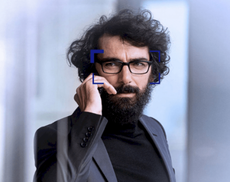
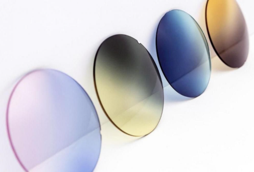

Le choix de vos verres est essentiel : matière, épaisseur, traitements, teintes… chacun de ces paramètres contribue directement au confort et à l’efficacité de vos lunettes.
Ces dernières années, les verres ophtalmiques ont connu des avancées technologiques majeures, afin de mieux répondre aux nouvelles sollicitations de notre vision, comme l’usage intensif des smartphones, tablettes ou liseuses numériques.
C’est notamment le cas des verres progressifs, aujourd’hui réalisés sur mesure, en tenant compte de la morphologie et du mode de vie de chaque porteur. Cette expertise des verres 100 % personnalisés est au cœur de notre savoir-faire
Un entretien régulier de vos lunettes (nettoyage adapté, ajustements, vérification des vis) est également essentiel pour préserver leur performance et prolonger leur durée de vie.
En tant qu’opticiens indépendants, nous ne dépendons d’aucune politique commerciale imposée. Notre engagement est simple : vous recommander l’équipement le plus adapté à vos besoins, à vos habitudes et à votre budget.
Les verres unifocaux corrigent un seul défaut visuel, qu’il s’agisse de la vision de loin ou de près.
Verres pour la vision de loin
Ils compensent la myopie (-) ou l’hypermétropie (+), avec ou sans correction de l’astigmatisme. Ces verres offrent un champ visuel large, idéal pour les activités quotidiennes.
Verres pour la vision de près
Recommandés pour la lecture, notamment dès l’apparition de la presbytie, ils sont conçus pour une distance d’environ 40 cm.

Aussi appelés verres dégressifs, verres ordinateur ou verres mi-distance, ils permettent de voir net de près tout en conservant une vision confortable à moyenne distance.
Parfaits pour le travail sur écran, la lecture ou les activités manuelles, ils limitent la fatigue oculaire et sont une alternative de choix aux verres progressifs pour les sessions prolongées sur écran.
Spécialement conçus pour ces usages, ils apportent une meilleure profondeur de champ et un confort visuel optimal.

Les verres progressifs constituent la solution idéale pour une vision claire à toutes les distances, de près comme de loin.
Nous proposons des verres de dernière génération, fabriqués sur-mesure grâce à des équipements de pointe et une expertise continuellement mise à jour.
Ces verres assurent une adaptation rapide et un confort visuel durable.
Nous faisons confiance aux leaders du secteur pour leur qualité et leur capacité d’innovation.

Unifocaux ou progressifs, les verres solaires adaptés à votre vue vous apporteront un confort inégalé.
Plus besoin d'avoir à constamment alterner entre lunettes de vue et solaires.
Profitez-en pour affirmer votre look en personnalisant leur couleur ou leur effet.
Dégradé ou miroir : avec plus de 100 combinaisons disponibles, tout ou presque est maintenant possible !
Fini le jonglage entre plusieurs paires ! Facilitez votre quotidien et améliorez votre confort avec les verres à teinte variable.
Ces verres vous permettent de voir clairement, peu importe les circonstances, grâce à leur propriété à changer de teinte en fonction de la luminosité.
Très foncés au soleil et parfaitement clairs à l’intérieur, ils vous garantissent un confort visuel optimal.
Disponibles tant en unifocaux qu’en progressifs, et en plusieurs teintes, ils réduisent en outre la fatigue oculaire.
Les verres ZEISS DriveSafe sont optimisés pour la conduite. Ils garantissent plus de confort et une plus grande sécurité sur la route,
Ces verres vous procurent une meilleure vue de nuit, par faible luminosité ou dans des conditions climatiques difficiles.
Ils protègent vos yeux contre les éblouissements et vous aident à rapidement voir net en passant de la route au tableau de bord et vice-versa.
La myopie, de plus en plus fréquente chez les enfants, est une préoccupation majeure pour les parents et les professionnels de santé.
Grâce à une technologie innovante, de nouveaux verres permettent de réduire significativement la progression de la myopie chez l’enfant, tout en assurant une vision nette au quotidien.
Portés comme des lunettes classiques, ils s’intègrent facilement dans la vie de l’enfant et contribuent à préserver sa santé oculaire à long terme.
En moyenne, nous passons près de 6 heures par jour devant des écrans : ordinateurs, tablettes, téléphones ou télévision.
Si vous souffrez de fatigue oculaire, de maux de tête ou de troubles du sommeil, il est essentiel de protéger vos yeux avec des verres filtrant la lumière bleue.
Ces verres réduisent efficacement les effets néfastes des écrans : sécheresse, picotements, migraines et fatigue visuelle.
Survolez les images pour voir l'impact de nos traitements sur votre vision.
Élimine les reflets parasites pour une vision pure et esthétique parfaite.
Réduit la fatigue visuelle face aux écrans en bloquant la lumière nocive.
Diminue l'éblouissement des phares pour une conduite nocturne sécurisée.
S'adaptent instantanément à la luminosité extérieure pour un confort total.